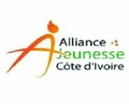
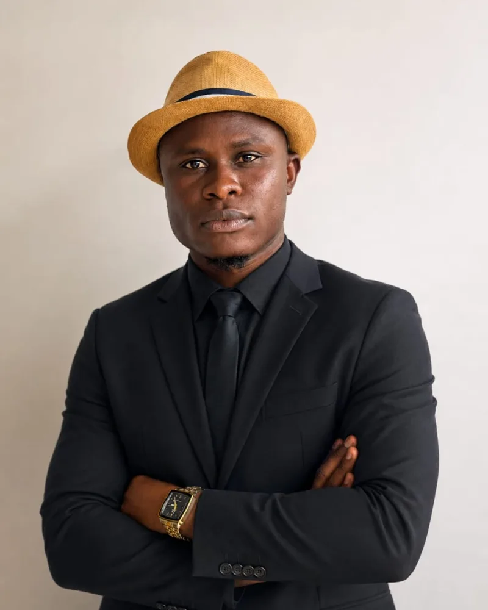

Entrepreneuriat
Salle A · Module JA DEEPDe l'idée au pitch : idéation, opportunités durables, modèle économique et préparation au concours de projets.
« Entreprendre, s'employer et s'épanouir pour un avenir durable »



Les Journées de l'Engagement et du Dynamisme réunissent pendant trois jours des jeunes de Man, du Tonkpi et de délégations venues d'Afrique de l'Ouest et du Centre pour se former, rencontrer des professionnels, présenter leurs projets et s'engager pour leur communauté.
« Entreprendre, s'employer et s'épanouir pour un avenir durable »
Panel inaugural le jeudi 3 décembre : « S'employer pour employer ».
Deux parcours de formation au choix et une session commune pour tous les participants.
De l'idée au pitch : idéation, opportunités durables, modèle économique et préparation au concours de projets.
Compétences de vie et soft skills, connaissance de soi, communication professionnelle, CV et entretien d'embauche.
Comprendre la santé mentale, gérer le stress de l'insertion et de l'entrepreneuriat, savoir demander et offrir de l'aide.
Des formateurs et experts engagés pour l'employabilité, l'entrepreneuriat et le bien-être des jeunes.
 Employabilité
EmployabilitéDirecteur des Programmes à African Youth Solution Academy, membre du comité consultatif jeunesse auprès de la Délégation de l'Union européenne en Côte d'Ivoire.

Santé mentaleSpécialiste en développement communautaire, engagé pour la santé mentale et le bien-être des jeunes, membre du Youth Sounding Board de l'Union européenne en Côte d'Ivoire.
Un nouvel intervenant sera dévoilé très prochainement.
Pour cette 1ʳᵉ édition, les JED accueillent des délégations de jeunes venues de six pays d'Afrique de l'Ouest et du Centre.

Créez votre visuel officiel « J'y serai » avec votre photo et partagez-le sur vos réseaux avec #JED2026.
Les finalistes présentent leur projet devant un jury international, suivi de questions-réponses. Chaque candidat dispose du même temps de parole. Le meilleur projet est récompensé lors de la grande cérémonie de clôture.

Des rencontres précédentes de l'UJDM. Les photos des JED 2026 seront publiées dans la galerie pendant l'événement.